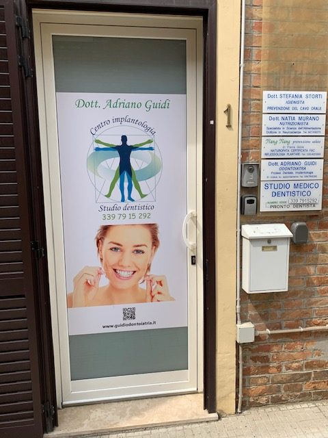
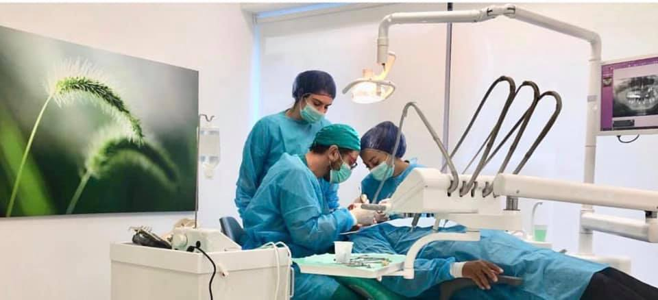
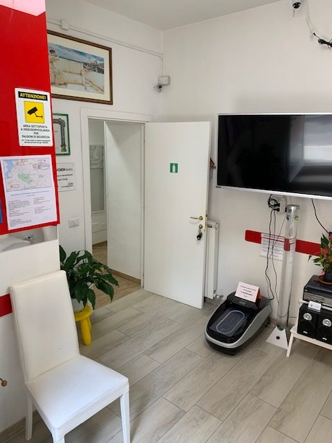
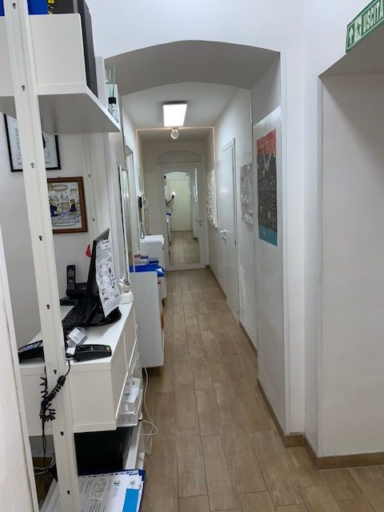
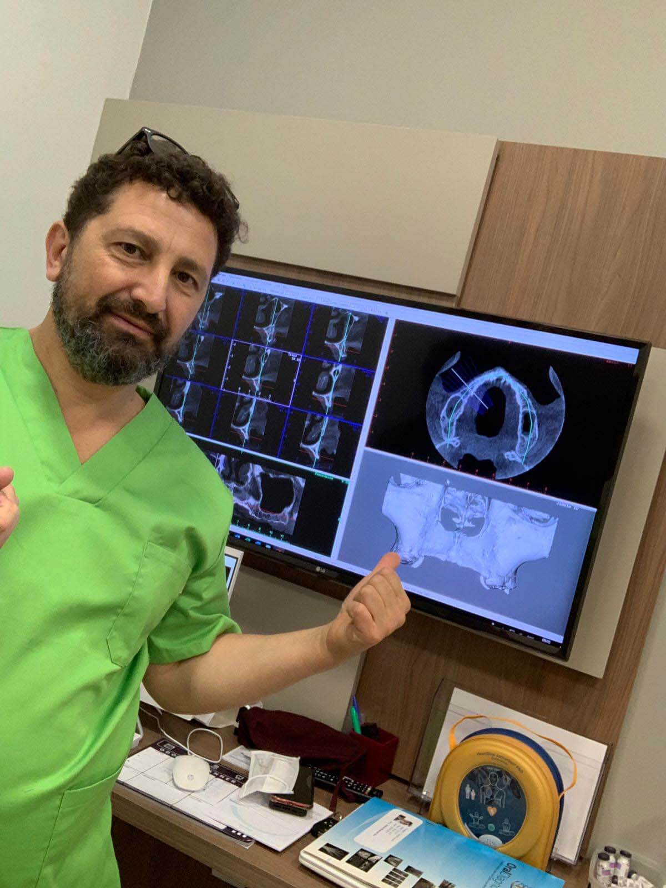
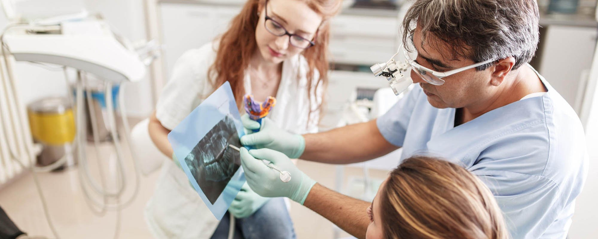

Implantologia
Singolo dente, più denti o arcata completa. Tecnica computer guidata: poco invasiva, senza bisturi né punti nei casi indicati.
Prenota →Studio implantologico e protesico · Ancona
Il nostro approccio
Dalla visita di controllo alla riabilitazione completa dell'arcata: tutto sotto lo stesso tetto, seguito dallo stesso medico.
Singolo dente, più denti o arcata completa. Tecnica computer guidata: poco invasiva, senza bisturi né punti nei casi indicati.
Prenota →Quattro impianti, carico immediato e protesi fissa applicata subito dopo TAC. Intervento di circa 2 ore.
Prenota →Corone su denti naturali o su impianto; dispositivi rimovibili e scheletrati quando sono la scelta giusta.
Prenota →Sbiancamento dopo valutazione medica e faccette in ceramica biocompatibile: poca preparazione, grande effetto.
Prenota →Meno anestesia, sanguinamento minimo e guarigione più rapida in chirurgia, igiene, endodonzia e per afte ed herpes.
Prenota →Riallineamento dei denti con dispositivi fissi o rimovibili, studiato sul tuo viso e sulle tue esigenze.
Prenota →Sedute di igiene professionale e visite di controllo per prevenire carie e malattia parodontale.
Prenota →Ripristiniamo i denti compromessi per evitare estrazioni, con protocolli scientifici aggiornati.
Prenota →Lo Studio






Il Dottore
Odontotecnico di formazione, poi laureato in Odontoiatria e Protesi Dentaria con il massimo dei voti all'Università Politecnica delle Marche. Ha affinato la chirurgia orale e l'implantologia con corsi di perfezionamento anche a Parigi e Lione. Conosce il laboratorio quanto la poltrona: per questo le sue protesi nascono già pensate per durare.
Indicatori di casistica dichiarati dallo studio.Via Piave, 1 · 60121 Ancona
A pochi passi dal centro e dal Teatro delle Muse.
Lun–Sab 8:30–20:00
Indicazioni →Via Flaminia, 11 · Fano (PU)
Per chi vive tra Pesaro, Fano e la Vallata del Metauro.
Su appuntamento
Indicazioni →Dolore, un dente rotto, una protesi che si muove? Scrivici su WhatsApp, rispondiamo anche fuori orario.
Scrivi su WhatsApp★★★★★“Bravissimo dottore, molto competente.”
★★★★★“Eccellenti professionisti di chirurgia e impiantologia avanzata.”
Scegli sede, sala e orario. Ti confermiamo l'appuntamento per telefono o su WhatsApp, con un piano di cure e costi concordato prima di iniziare.